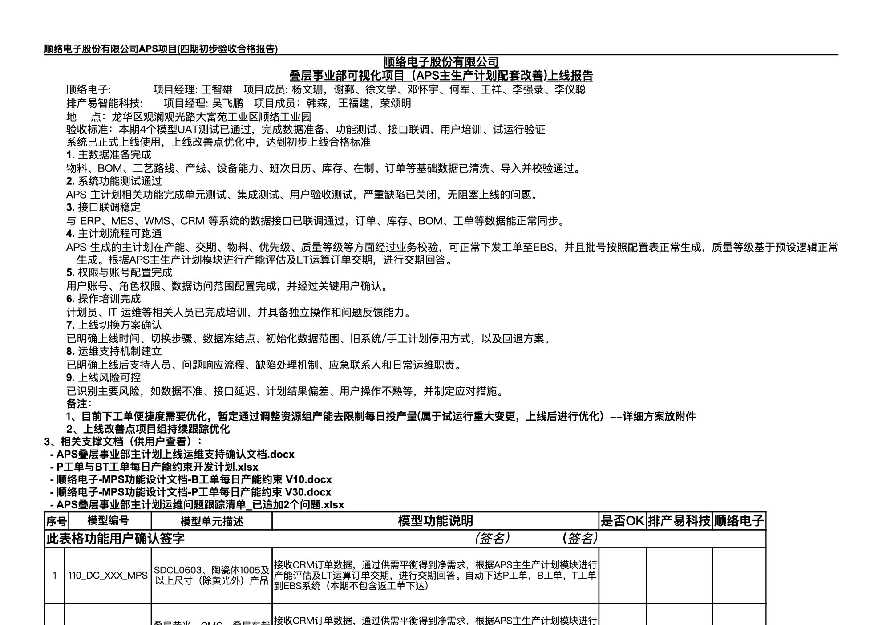
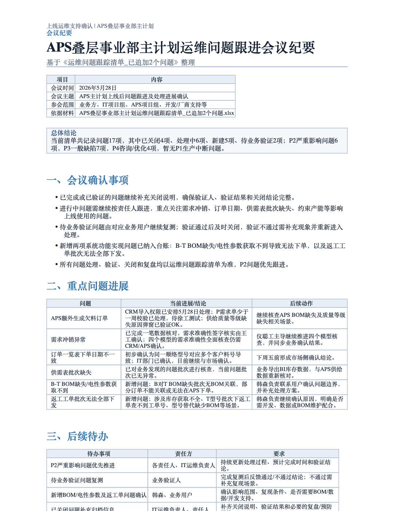
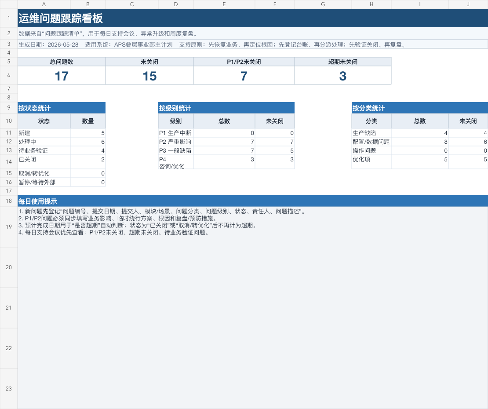
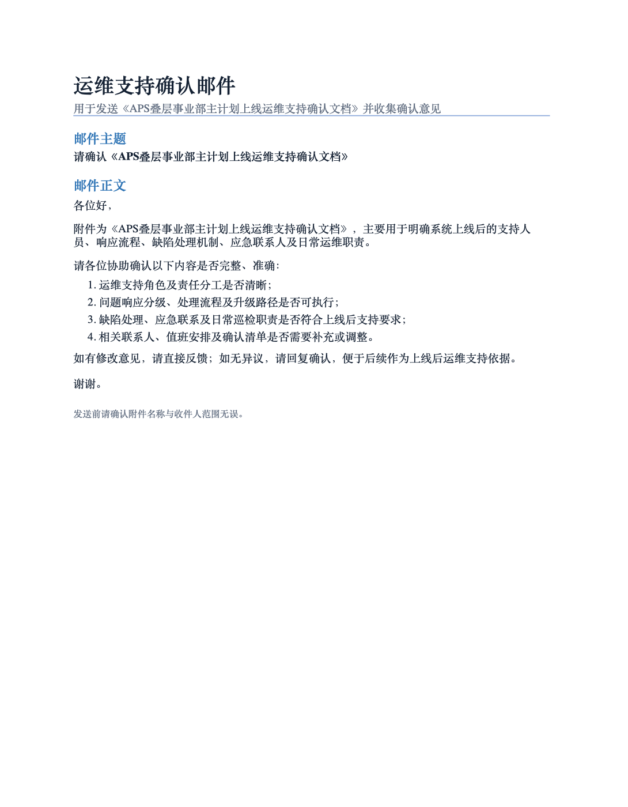
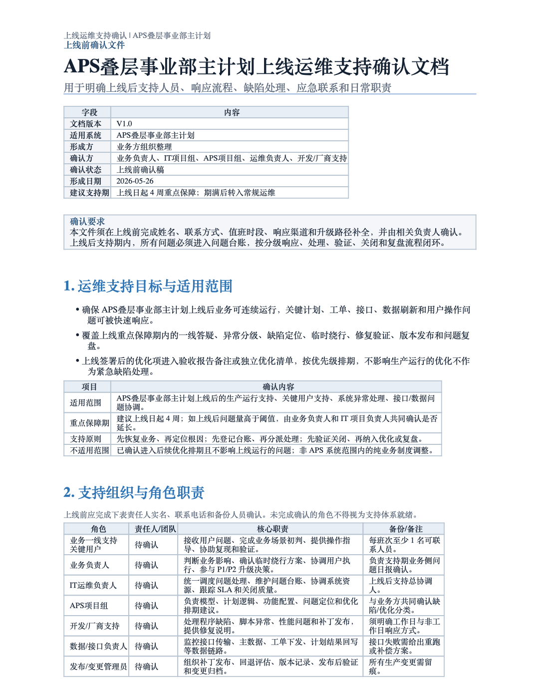
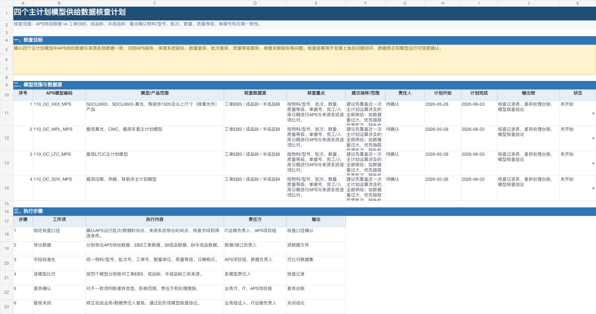

把 Codex 用成 APS 项目的第二工作台
结合叠层事业部项目，分享我如何用 Codex 分担文档输出、方案调研、系统开发协同与团队知识沉淀。




从“一个顾问怎么用”讲到“一个团队怎么复用”
Codex 到底不同在哪里
不只回答问题，而是在本机工作区里读文件、改文件、生成网页和检查结果。
实施顾问为什么需要它
项目周期短、客户要求高、顾问身兼多职，交付质量容易被碎片化工作拖住。
叠层事业部项目实操案例
围绕延期项目的上线验收，拆成建议、标准、实现、确认四个真实动作。
从个人效率到团队效率
把一次产出沉淀为模板、检查清单、知识库和协作规范。
它更像一个能进入项目工作区的执行型助手
周期短、要求高、角色多，很多质量问题来自精力被拉散
真正需要分担的，不是顾问判断，而是文档输出、信息整理、方案初稿和可校验的重复劳动。
Codex 的价值就在这里：先把碎片变成结构，再把结构变成可审阅交付物。
项目延期后，顾问如何配合项目经理推动上线验收
我的任务不是替代项目经理，而是把 APS 专业判断、交付材料和推进动作组织起来，让项目重新进入可验收路径。
共识问题
梳理延期背景、关键风险、客户关注点和上线阻塞项。
建立标准
输出上线验收标准，开会确认边界、责任和关闭口径。
逐条满足
围绕验收项推进配置、数据、功能变更和问题关闭。
确认达成
实现后召开确认会议，形成会议纪要和验收结论。
推动验收
输出上线邮件、支持安排和后续优化计划，推动签收。
先把延期项目从“情绪压力”拆成“可推进动作”
我给 Codex 的上下文
- 项目当前延期，客户关注上线验收。
- 我是 APS 顾问，需要配合项目经理推动上线。
- 请从顾问角色给出建议：风险、会议、交付物、责任分工、下一步动作。
输出目标：形成一份可和项目经理讨论的推进建议。
风险拆解
把延期原因、客户疑虑、数据质量、功能变更、验收口径拆成可讨论事项。
顾问分工
明确顾问负责标准、方案、验证材料和业务解释，项目经理负责节奏与承诺。
会议议程
准备项目推进会、验收标准确认会、实现后验收确认会。
沟通话术
把“延期解释”转成“当前状态、解决动作、验收路径、后续优化”的表达。
把客户关注点变成“可确认、可追踪、可签收”的验收口径
验收标准
把上线目标拆成数据、功能、流程、报表、权限、运维支持等标准项。
会议确认
形成议程、待确认问题、结论表述和责任人，让会议围绕标准推进。
纪要沉淀
将讨论结果整理为会议纪要：背景、结论、遗留项、时间计划和关闭条件。
顾问校验
我负责检查 APS 口径、客户表达、边界承诺和后续优化是否准确。
资源组产能限制每日投产量：从业务诉求到可开发方案
把“我们做完了”变成“标准已确认、资料已归档、后续有安排”

确认会
逐项确认验收标准达成情况，记录未关闭项和后续优化计划。
上线邮件
统一表达上线范围、支持安排、确认结论、风险提醒和待办责任。
签收材料
把验收标准、会议纪要、问题清单、支持文档作为一组材料归档。
后续优化
把试运行重大变更标记为上线后优化项，避免把范围无限扩大。
四个具体页面，把“怎么做到”现场演示出来
项目推进建议
输入延期背景和顾问角色，让 Codex 生成与项目经理协同的风险和动作清单。
验收标准与纪要
输入客户关注点，生成上线验收标准，再整理会议纪要和待确认项。
功能设计与计划
用资源组产能限制场景，生成设计文档、开发任务和测试清单。
上线邮件与沉淀
基于已确认材料，生成上线邮件、运维支持说明和知识库条目。
演示重点不是“它会写”，而是“顾问如何给上下文、如何验收结果、如何沉淀复用”。
从个人减负，到项目节奏，再到团队复用

AI 没有替代 APS 顾问，它改变了顾问组织工作的方式
能执行
不止提供答案，还能把答案落到文件、网页、表格、脚本和本地检查里。
懂上下文
可以围绕同一项目连续处理大纲、截图、文档、日志和交付物。
可沉淀
每一次产出都能进一步变成模板、检查清单、FAQ 或知识库。
我的焦虑感被缓解，是因为我看到 AI 可以帮顾问从低价值重复劳动里出来，重新聚焦专业判断和项目推动。
关键不是“会不会被替代”，而是“能不能把它训练成自己的工作方法”。
先从三个最容易见效的入口开始
做一张项目问题表
把当前问题转为标准字段：等级、类型、责任人、处理状态、验证结论、关闭说明。
做一份验收标准模板
按数据、功能、流程、报表、权限、运维支持拆分，形成项目通用结构。
沉淀一条知识资产
把最近解决过的一个问题整理成场景、原因、处理步骤、复用话术和注意事项。
Codex 不能替代 APS 顾问，但它能放大顾问的结构化能力、交付速度和团队沉淀能力。
让经验从个人能力，变成团队能力。